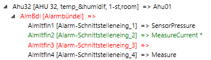

Use the Function Checker to Check the Project for Assigned Functions
Scenario: You want to ensure that all the objects on your plant include a valid function. Object highlighted in color that have no assigned function. You can efficiently assign missing functions using the tool.

Display state in browser:

Red: No function assigned
Green: Function assigned, plant not yet saved
Black: Function assigned
The following changes can also be efficiently edited using the Desigo Function Checker:
- Changing Object Classification
- Selecting or clearing Overwrite Protection
- Creating Related Items